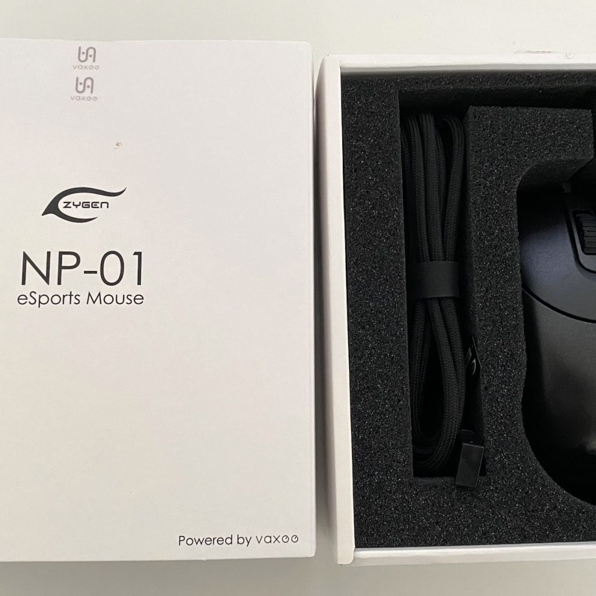
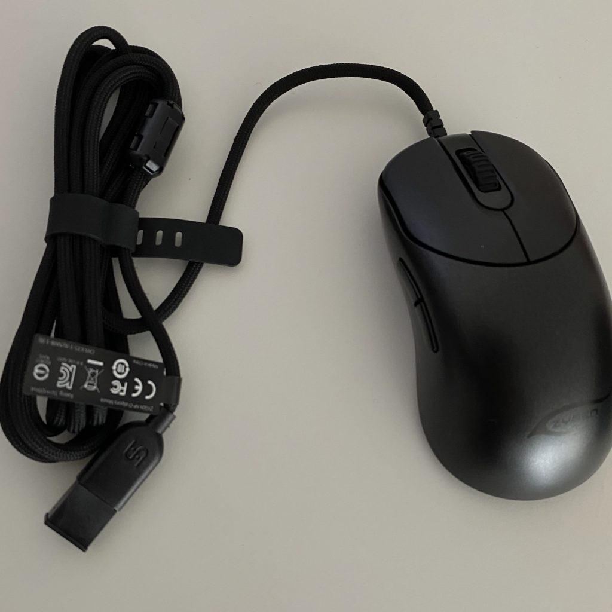

Since the first press release announcing Vaxee, anticipation had been building for their first product launch. Zowie is a legendary name in gaming mice and while they have been stagnant of late, their products still garner a cult following. The Zygen NP-01 is a collaboration with infamous Japanese Counter-Strike legend Junya “noppo” Taniguchi and they created a brand new shape for the effort.
Not much here in terms of presentation, the mouse comes with no extras and just a regular looking box. Extra feet can be purchased directly from Vaxee but no come with the box.
First impressions of the mouse itself are that it looks great. The dark grey gunmetal color and subtle branding gives it a familiar Zowie feel but you can tell this is something different at the same time. Just a great look mouse in my opinion. In terms of shape, this is a hard mouse to describe as it is a hybrid between an ambi and an ergo mouse. They’ve toned down some the curvature of a typical ergo design and made it much more subtle. That being said this is clearly geared towards right handed users. In terms of comparisons it feels closest to the GPW or Zowie S2. The coating is unique, it’s not grippy but super smooth and it feels almost more like lightweight ceramic than plastic. Hard to describe, it’s not bad to me but it does take some getting used to. I like it more than a glossy coating but not more than my favorite matte ones. It can also feel a bit clammy if your hands are at all sweaty. QC felt good out the box, the mouse immediately feels solid like it means business. No rattle, creaking or any sort of looseness. The seamless design is awesome to feel and is kind of impressive when you stop to admire it. There is a major issue with side flex where if you press on the left side , it will actuate the back side button. It doesn’t take a crazy amount of force to do this so it’s disappointing to see this on a mouse that isn’t a honeycomb design. If you’re OCD it might bother you a lot more but it isn’t a constant issue in normal use. I’ve heard other users have had this problem too so it’s not an isolated issue.
M1/M2 feel nice and crisp, snappy performance with a quick bounce back. They are moderately light clicks that aren’t too loud. No pre-travel but some post travel and you can wiggle the triggers a bit but it shouldn’t impact gameplay. Side buttons are great, little to no post or pre-travel, very crispy and satisfying on my copy. Great position and they are large and easy to press. The scroll wheel is very tactile and very loud. Feels very sturdy, it won’t be good for browsing but feels nice in game. Sound is kind of grating but I can live with it. Also important to note that this is a 24 step mouse wheel while the regular Zowie mousewheel is just 16 steps. The wheel is fine in game but a bit of hassle to use for desktop use and I would recommend you keep another mouse nearby and use this mouse to game only.
The cord is just ok, but due to its width and weight it makes the entire mouse feel heavier than its rated 75 grams. It’s similar to the one on the DA v2 mini and only better than say the 1st gen Glorious shoelace cable. The cable is definitely one of the less impressive aspects of this mouse.
Sensor is the 3389, which is my favorite sensor at the moment. I had excellent experiences with tracking and flicks. I had no problems with LOD. The skates on the other hand were a bit of a letdown. They are PTFE but felt a bit slow on my Artisan Hien pad. The stock skates are also only 0.45 mm so you’ll feel some resistance if you press down on your mouse into the pad. There are thicker 0.6mm feet available but you’ll have to order them separately from Vaxee and install them yourself.
From what I can tell there isn’t any compatible software with this mouse. In-game the shape felt way better than I expected. I kind of had low expectations for this mouse but it does really transition easily from claw to fingertip for me. That being said the questionable QC really shows up sometimes and that is really the downfall of this mouse. It isn’t solid feeling enough to have that real confidence you need to perform consistently all of the time. Flicks and tracking aim were pretty on point for me but this mouse could benefit a lot from replacing the stock feet which weren’t that smooth or consistent. There is no software for this mouse and all the settings can be changed on the base of the mouse from click latency to DPI and polling rate. As for performance, I did not play my best with this mouse. I couldn’t quite figure it out but the shape just didn’t offer a comfortable grip for me in claw which is my main grip. It also didn’t feel really comfortable to palm and at 75g was heavier than I’ve been used to. I think once you go to a sub 70g mouse its really hard to go back to something like this.
I like the shape and clicks and the overall feeling of the mouse. It just falls short in some of the areas I listed above. Don’t expect Zowie 2.0 its more like Zowie 1.5. If you’re into modding mice this can get better with a little work. Price is fair IMO but factor in the shipping and if you want to do mods and this can set you back over $100 easily. If they fix the issue with side buttons accentuating when you squeeze the shell this mouse can be improved.